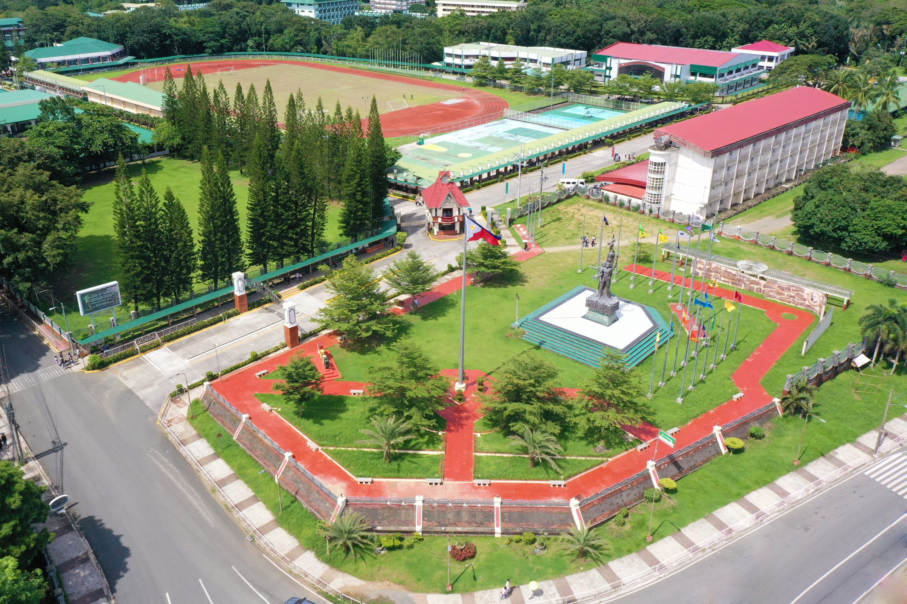

Request Documents
No more waiting in long queues. Request transcripts, certificates, and other academic documents with just a few clicks. Fast, secure, and hassle-free.
Request Document How it worksNo more waiting in long queues. Request transcripts, certificates, and other academic documents with just a few clicks. Fast, secure, and hassle-free.
Request Document How it works
A faster, smarter, and more convenient way for CvSU students to request their academic documents.
The CvSU - Document Request System (CvSU-DRS) is a web-based platform designed to make student document transactions more convenient and efficient. It aims to eliminate the long lines and time-consuming manual processes by allowing students to request their academic documents anytime and anywhere. Through CvSU-DRS, students can easily log in using their CvSU email, submit their document requests online, and receive notifications through the website and their email. While payment is still made at the cashier, the system ensures a smoother and faster transaction by providing updates on the status of each request. This initiative marks the university's step toward digital transformation, promoting accessible and student-friendly services.
No more long lines! Follow these simple steps to request your documents online.
Select the type of document you need from our catalog.
Complete a simple form with your details and requirements.
Securely pay the processing fee at the cashier.
Get notified when ready and pick up your document.